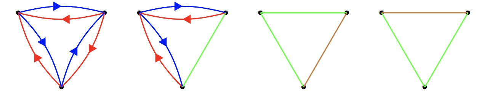

Problem 857: "Beautiful Graphs" (level 26)
A graph is made up of vertices and coloured edges. Between every two distinct vertices there must be exactly one of the following:
- A red directed edge one way, and a blue directed edge the other way
- A green undirected edge
- A brown undirected edge
- A cycle of edges contains a red edge if and only if it also contains a blue edge
- No triangle of edges is made up of entirely green or entirely brown edges
Below are four distinct examples of beautiful graphs on three vertices:

Below are four examples of graphs that are not beautiful:

Let $G(n)$ be the number of beautiful graphs on the labelled vertices: $1,2,\ldots,n$. You are given $G(3)=24$, $G(4)=186$ and $G(15)=12472315010483328$.
Find $G(10^7)$. Give your answer modulo $10^9+7$.